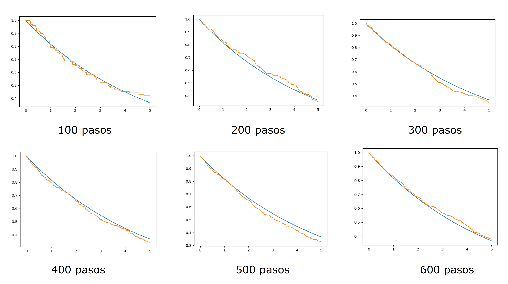

Comenzando con la evolución temporal de , parte A de una matriz compuesta y la ecuación de Von Neumann Se puede definir un mapa dinámico como una función que va del espacio de Hilbert de A hasta sí mismo y consiste en superoperadores que representan la evolución temporal para la matriz densidad para y tiempo fijos. Si se escribe en su base espectral, y se escribe las componentes matriciales del operador unitario presente en [eq1.3] en la misma base: Se puede reescribir la evolución temporal como una medición generalizada (POVM) Dicha evolución temporal cumple como propiedades De acá se deduce que la operación evolución temporal cuántica es convexa, positiva y preservadora de traza, por lo que mantiene el sentido físico de las matrices densidad, que son las probabilidades. Estos operadores de evolución son los que forman un semigrupo que cumple con la siguiente propiedad fundamental. La propiedad en [eq1.7] está vinculada con la Markovialidad. Se define entonces un generador de semigrupo, que consiste en un mapa lineal. Se pretenderá entonces, construir el más general en el espacio definiendo operadores desde hasta definiendo un producto escalar para operadores Se puede escribir el operador de medida generalizada, y por lo tanto el operador de evolución temporal como combinación lineal de los elementos de la base (considerando el producto escalar anterior: Llamando a los resultados de los productos escalares la expansión de [eq1.10] se simplifica Por la forma dada en la definición en [eq1.11], los , forman una matriz hermítica y positiva. Sin perder generalidad se define que el último operador de la lista sera proporcional a la identidad, así como que los operadores traza tendrán traza Dicho esto se procede a evaluar la derivada de la evolución temporal, considerando [eq1.8], la definición formal de derivada (con un tiempo ) y las definiciones dadas en [eq1.12] Se descompone en los operadores base usando las condiciones señaladas Como se puede notar de descompuso en los productos que no incluyen a , los que lo incluyen una vez y el que lo incluye 2 veces. Definiendo las siguientes constantes
La ecuación de [eq1.14] se simplifica Definiendo ahora los siguientes operadores Se puede también escribir el Hamiltoniano en función de estos operadores Y la expresión de [eq1.17] se simplifica más Usando la notación de anticonmutador y separando los elementos de F y G en los útimos sumandos se obtiene: De los últimos 2 sumandos de [eq1.21] se reemplaza: Además considerando que el semigrupo preserva la traza Lo último debido a que la traza es cíclica. De [eq1.23] se obtiene que E insertando [eq1.24] y [eq1.22] en [eq1.20] se obtiene Al ser los elementos positivos, la matriz que los contiene puede diagonalizarse. Si se escribe la propiedad anterior como Se pueden escribir los operadores del espacio definidos para [eq1.10] en términos de esta diagonalización Despreciando el término hamiltoniano de la ecuación [eq1.25] e insertándolo en [eq1.27] se obtiene: Y finalmente, usando que se puede reescribir [eq1.28] como
Derivación para sistema de 2 niveles acoplado a baño de osciladores
Definido el Hamiltoniano de Jaynes-Cumming que no depende del tiempo: Donde vale la aproximación de onda rotante. Se puede pasar rápidamente al marco de interacción. Y partiendo de la ecuación diferencial de Liouville (Von Neumann) válida cuando el hamiltoniano no depende del tiempo, considerando operadores en el marco de interacción: La ecuación se itera 2 veces para hallar la solución (lo que por lo general basta como aproximación) Asumiendo que y que (Lo que equivale a decir físicamente de acuerdo a , que el reservorio es un estado termal), los 2 primeros sumandos de [eq1.33] se anulan, se deriva 1 vez y la ecuación maestra finalmente queda Asumiendo que la matriz densidad en es un estado producto, se procede a descomponer el integrando y usando el hamiltoniano de interacción en [eq1.32], [eq1.36] se vuelve: Otra aproximación que se realiza es el acoplamiento débil, qué básicamente se vale de la desigualdad temporal de Heisenberg Para decir que el tiempo de correlación del baño es menos cuando los anchos de energía son mayores y que se puede asumir que el tiempo propio del baño será mucho menor al tiempo del sistema original en el cuadro de interacción El primer sumando en [eq1.37] equivale a El segundo sumando en [eq1.37] (sin contar el signo menos) equivale a El tercer sumando en [eq1.37] (sin contar el signo menos) equivale a El cuarto sumando en [eq1.37] equivale a Para poder quitar los operadores del campo de un modo de la integral se hace una aproximación bastante fuerte: que en en realidad depende del tiempo , lo que significa que el sistema es local en el tiempo. Con esto, la traza en B de cualquiere de estos elementos solo depende de y de los operadores G, e incluso se puede pasar para afuera de la integral, quedando [eq1.35] como: Entiéndanse los como las integrales de los elementos dependientes de B, estando a generados a partir de [eq1.40], a a partir de [eq1.41], a a partir de [eq1.42] y a de [eq1.43]. Usando la propiedad de que la traza de una matriz es cíclica,
Lo anterior Reduce las integrales a resolver a solo 8. Pero ahora, si se considera que las funciones de correlación, más que de o , dependen de la diferencia entre ellos, se puede aseverar que:
Lo que Reduce la obtención de la ecuación maestra a obtener 4 integrales, que se llamarán ,, y para las resultantes de [eq1.53],[eq1.54], [eq1.55] y [eq1.56] respectivamente. Con esto, [eq1.44] se Reduce a Lo conveniente es que las 4 integrales se resuelven de manera similar.
Derivación para sistema comprimido de muchos modos
9 Orszag, M. Quantum Optics, Third Edition (2013)
Clonado Cuántico
Motivaciones
Se pueden considerar las siguientes 2 motivaciones para estudiar el copiado cuántico:
Se puede considerar un sistema cuántico con un estado determinado (por ejemplo, polarizaciones del modo de un campo o spines de un electrón) que se quiere amplificar. Para eso, se busca una forma eficiente de copiar varias veces el estado. El entrelazamiento será el principal impedimento que se encontrará para hacer un clonado en principio (al interactuar varios sistemas, habrán correlaciones y los estados podrían entrelazarse). Curiosamente, es ese mismo entrelazamiento posible que parece imposibilitar el copiado el que después será fundamental para implementar máquinas de copiado cuántico, como se verá en los desarrollos de este documento.
En criptografía, se tiene comunicaciones entre Alice y Bob por un canal cuántico sin ruido (piensen, por ejemplo, en el envío de señales usando polarizaciones de fotones en un canal de fibra óptica). Esta señal puede ser intervenida por un agente externo (por lo general llamado Eva) que puede copiar la información que capta en el canal. Una ventaja de la criptografía cuántica (y que varios de los protocolos terminan usando) es que los procedimientos de copiado cuántico provocan que al copiar un estado si o si se termina alterando el estado original, por lo que si Bob recibe un estado con determinadas características, puede darse cuenta que la comunicación fue intervenida y desechar el estado por seguridad. Las máquinas de copiado cuántico pueden modelar la acción de Eva e indicar qué probabilidades son las que indicarían a Bob la intervención.
¿Se puede clonar un estado?
¿Qué es clonar?
Para efectos de Teoría de Información, clonar un estado es básicamente tomar un conjunto de números en un sistema y escribir los mismos números en otro conjunto con números arbitrarios (por simplicidad por lo general se elige para el segundo sistema solo ceros A nivel clásico esto siempre se puede hacer porque se cumplen 2 condiciones
Es posible copiar de forma "perfecta", o sea llevar la secuencia a otro estado con probabilidad 1. Esto se debe porque a nivel clásico la física es local, o sea, hacer cambios en un sistema cerrado nunca realiza cambios en otro sistema cerrado.
El copiado no depende del tipo de secuencia que queramos copiar, no hay una secuencia favorita a priori para copiar. Para todas las secuencias se puede copiar con probabilidad 1.
Dicho esto, aparece la pregunta: ¿Se puede hacer un proceso de clonado a nivel cuántico? Es decir, pasar estas secuencias a determinados estados cuánticos:
Teorema de no-clonado
La respuesta que da la física cuántica es NO. Detrás de esta respuesta están fenómenos puramente cuánticos como el entrelazamiento de estados o el teorema de no signal. Esto será probado siguiendo a . Se considera una máquina de clonado perfecto: Los estados en [eq2.3] son estados de la máquina de copiado, sobre la que se trazará por lo que no son del todo necesarios para los próximos análisis. Definiendo un estado cualquiera que se quiere copiar (por simplicidad ) Se calcula el resultado de la máquina para el estado en [eq2.4] usando [eq2.3] Se asume que los estados de la máquina son ortogonales entre sí Y con ello se puede calcular la matriz densidad producto de la traza para y Si se toma el estado producto para en y Claramente son distintas. Si funcionase como el proceso clásico, estas matrices serían iguales como lo señala [eq2.2]. Existen formas de cuantificar la distancia entre ambos estados, pero lo relevante es entender por qué son distintos.
La física cuántica (hasta por donde sabemos) es no local. Existen estados entralazados que pueden alterar resultados de medidas a distancia. Esto contradice lo necesario para tener probabilidad 1 de copiado.
Se puede demostrar (y se hará en la siguiente parte) que un procedimiento de copíado como el que se está implementando es mejor para algunos estados que para otros, lo que contradice la necesidad de independencia del estado que se quiere copiar.
Para evaluar la distancia entre 2 estados es necesario definir una distancia. Se define la distancia Hilbert-Schmidt: que nos bastará como distancia para matrices (la doble barra representa el determinante de esas 2 matrices). También será necesario entonces calcular las matrices densidad Reducida para las 2 matrices que se quieren comparar:
Entonces la distancia entre ambas matrices Reducidas será Lo que demuestra inmediatamente que el segundo punto (necesidad de independencia de los estados) no se cumple. Para los estados en los que vale o (es decir, para o la máquina copiará a la manera clásica, y para no solo copiará mal, sino que incluso destrozará el estado.
Máquinas de clonado cuántico
Máquina Universal de Clonado Cuántico
Siguiendo las derivaciones de , se puede construir una máquina de copiado probabilista. Esto relajando una de las 2 condiciones.
Ya que la física cuántica es no local, se requiere relajar la condición de perfección, las copias no tienen por que llevar al mismo estado con probabilidad 1. Tendrán una probabilidad menor que 1 que se puede optimizar:
Se seguirá exigiendo que la máquina sea independiente del estado a elegir, es decir, que se pueda usar para copiar cualquier estado con la probabilidad mencionada anteriormente.
La relajación de la condición de perfección se escribe matemáticamente así. Para exigir unitariedad a la transformación debe cumplirse
Si se exige que los estados y sean ortogonales entre sí, usando [eq2.13] se obtiene la misma relación de ortogonalidad para los Ojo: los estados entre sí son ortogonales, no ortonormales. Los productos punto valdrán elementos menores que 1 que son los que se optimizarán. Definiendo
Se representa el estado para la transformación [eq2.11] en el estado mostrado en [eq2.4] En la referencia se dice que por desigualdad de Schwarz: Aunque físicamente es más claro ver por qué pasa esto. es la probabilidad de que la máquina falle para todo el estado, mientras es la de acertar para solo 1 de las componentes del estado en la base lógica. Usando de [eq2.12] a [eq2.16], se escribe la matriz densidad Reducida para y . Y la matriz Reducida tanto para como para será Calculando la distancia para las matrices recién calculadas considerando la definición de [eq2.9] se obtiene La función (para que cumpla la segunda condición de independencia de los estados no debe depender de Esto simplifica considerablemente [eq2.23] Así la distancia solo depende de , parámetro que también se puede optimizar para obtener el valor númerico de distancia mínima entre el estado resultante y el ideal. Esto se puede hacer buscando que la distancia entre la matrices resultante conjunta y la ideal para ese espacio (usando lo obtenido en [eq2.24] tampoco dependa de ni a segundo órden Optimizando la distancia calculada en la matriz del [eq2.26] Una forma más de calcular la eficiencia de la medición es la fidelidad, sugerida en Donde (lo mismo para B) es el definido en [eq2.4] y por [eq2.22], ambas fidelidades serán iguales. Calculando para el caso general: Y reemplazando para lo obtenido en [eq2.24] y [eq2.27] Que es lo que se esboza en . La matriz densidad resultante luego de hacer los reemplazos tanto para como para es
Copiado covariante (dependientes del estado)
Las distancias entre estado real e ideal y fidelidad para la máquina de copiado universal servirán como una cota para la eficiencia de una máquina de copiado a nivel cuántico. Ninguna máquina de copiado cuántico que funcione para un qubit arbitrario podrá copiar estados con una distancia del caso ideal menos a ni con una fidelidad mayor a (ambos formalismos son equivalentes. Esto no significa que no se puedan copiar estados mejores cifras de eficiencia. Lo que implica es que si se quiere construir una máquina de copiado de mejor calidad, será necesario relajar la otra condición señalada al inicio: La de que sea independiente del estado. Acá dos ejemplos de ello siguiendo los desarrollos tanto de como Si se considera estados de la forma Y la siguiente transformación de copiado para estos estados: Se puede escribir para estos estados (Nótese que no aparece necesario el estado máquina). Trazando para A y B [eq2.34] Es fundamental para poder hablar de copiado que . Esto se logra si , con lo que la matriz en los 2 subespacios queda Y entonces se calcula la fidelidad de la máquina al estado orginal:
Máquina Probabilista de copiado
Otro enfoque para observar copiado cuántico es el enfoque de Dan y Guo, propuesto en 2000 y reseñado en y . Los textos (se consultó los 2 mencionados anteriormente además de y todos lo decían de manera similar) hablan por lo general que estos son copiados "con fidelidad perfecta pero con probabilidad de éxito y falla". Esto parece contradecir el teorema de no cloning, pero haciendo el desarrollo quedará más claro.
Se tiene 2 estados y no necesariamente ortogonales
Y se hace una máquina de copiado cuántico que copia ambos estados con cierta probabilidad y que el resto de posibilidades las condensa a un solo estado que reúne todas las posibilidades de error.
Los estados máquina son elegidos de manera que sean ortogonales entre sí. De esta forma, midiendo en se sabrá si la máquina funciona o falla. Considerando (lo que también iguala los estados máquina y los Reduce a 1 estado de éxito y 1 de falla) multiplicar escalarmente [eq2.39] y [eq2.40] genera Al ser el copiado propuesto una transformación unitaria, la norma en el lado izquierdo (antes de la transformación) y derecho (después de la transformación) deben ser iguales. Esto se optimiza cuando, al resolver la ecuación cuadrática para que aparece en [eq2.41] Considerando que siempre es positivo con lo que se recupera el resultado de no-cloning: (o sea, la probabilidad de acertar en el clonado) es 1 solo cuando , es decir, cuando los estados son ortogonales entre sí.
Implementación en sistemas físicos de máquinas de clonado
Implementación de máquinas de copiado universal en circuitos
Para poder ver cómo funciona una máquina de copiado cuántico más allá de lo meramente teórico, es interesante observar lo realizado en .
4 [cir1]
Formalmente, lo que realiza el circuito mostrado en figura 1 es: Se aplica [eq2.44] en los siguientes 2 casos particulares: Uno donde se coloca el estado de [eq2.4] en A (el estado que se quiere copiar) y un estado maximalmente entrelazado para B y M y otro estado en el que el sistema es con el estado de [eq2.4] en A, en B y el estado en M Se observa que mientras para el estado de [eq2.45] no produce cambios, el de [eq2.46] copia la información del estado de A a B. Se superponer ambos estados posibles para preparar el estado: A los coeficientes y se les impone, por normalización: El estado de [eq2.47] se pasa por el circuito, quedando: Y las matrices densidad Reducida, tanto para A como para B tendrán la forma:
Considerando [eq2.4] se tiene que Con esto las matrices de [eq2.50] y [eq2.51] se simplifican
De [eq2.47] y [eq2.51] se declara que, como en ambos espacios se obtiene el estado de manera probabilista, se puede considerar el resultado como una máquina de copiado con las fidelidades Si se exige que y sean iguales, combinando con la condición de normalización Se recupera la máquina de clonado universal. Lo que también se observa al reemplazar en [eq2.50] y [eq2.51]
Copiado universal para N dimensiones
Para hallar el clonado universal para estados de mayor dimensión a un qubit, Para el procedimiento es análogo. Solo que los siguientes estados cambian:
Además de considerar el como el vector 0 de la dimensión de B. El circuito se aplica a estos estados de similar forma Donde las sumas ahora son en binario para todo el espacio de tamaño N. Dicho esto, los casos particulares a superponer (de manera análoga al cálculo anterior) son:
Con lo que el estado completo superpuesto (a la manera del cálculo anterior) quedará: El estado completo sigue la siguiente normalización La matriz densidad Reducida tanto para A como para B es Por lo tanto, de manera análoga a lo anterior, se puede considerar esto una clonación con las fidelidades Y si se exige que , combinado con la ecuación de normalización de [eq2.60], resulta la obtención de la fidelidad para las copias de un estado de dimensión N: Para se obtiene inmediatamente el resultado anterior de .
Esquema para realizar una máquina de copiado
[cir2]
9 Buzek, Hillery. PRA 54,1844(1996) Jimenez. Apuntes Información Cuántica 1. (2019) Scarani, Iblisdir et al Rev.Mod.Phys 77,1225(2005) Fang, Wang, et. al. Physics Reports 544, 3, 20 (2014)
Termodinámica Cuántica
Motivaciones
La termodinámica, tal y como es conocida a nivel clásico, fue concebida para analizar las propiedades de aparatos de muchas piezas cuyo comportamiento individual no se considera realmente relevante. Fue desarrollada durante la Primera Revolución Industrial, pensando en máquinas mecánicas a vapor. Con todo, constituye una especie de pegamento teórico entre las distintas Mecánicas que evaluán evoluciones temporales de sistemas a distintas escalas (Relativista, Clásica y Cuántica). Funciona razonablemente en los 3 formalismos y define variables relativamente sencillas de entender intuitivamente y aplicar experimentalmente. Yendo hacia la Mecánica Cuántica, con todo lo aprendido sobre sistemas cuánticos cerrados y abiertos. ¿Qué se puede observar? ¿Tendrá alguna influencia en los resultados las características propias de la Mecánica Cuántica (incerteza, no conmutatividad, teoría de medida, entrelazamiento de estados)?
La Termodinámica como resultado del entrelazamiento
Si. Este título sorprende. Pero es cierto. Y muy poderoso. La siguiente sección intentará mostrar que esto es cierto. Como es sabido, la Termodinámica desde el punto de vista meramente clásico, es una teoría fenomenológica, es decir, se deriva de su ajuste a experimentos, más a una razón fundamental (en el sentido de Física Fundamental). A continuación, siguiendo el formalismo de se enuncian los 5 axiomas desde los que se deriva la Termodinámica como teoría:
Axiomas de la Termodinámica
Conocida como Ley Cero de la Termodinámica. 2 sistemas están en equilibrio térmico entre sí se encuentran en equilibrio con un un tercero. Esto matemáticamente se puede expresar como la existencia de las ecuaciones de estado para sistemas en equilibrio, tales que:
Conocida como Primera Ley de la Termodinámica. Considerando un sistema cerrado, ante los procesos térmicos, mecánicos y químicos dentro de dicho sistema, la energía total interna se conserva. La Energía Interna entonces se puede considerar la energía promedio de las partículas dentro del sistema: Aclaración: El diferencial de energía interna si es un diferencial completo, pero los sumandos en [eq3.2] no tiene por qué serlo.
Conocida como Segunda Ley la Termodinámica. El intercambio de energía entre sistemas cercanos al equilibrio (e incluso no cercanos a él) solo aumenta la entropía, que se puede definir para tales efectos como un indicador de la dependencia y fuerza del movimiento interno de las partículas dentro de la energía interna total:
Conocida como Tercera Ley la Termodinámica o Principio de Nernst. Al bajar la temperatura hasta el cero absoluto, el cambio de entropía definido en la ley anterior tiende a ser nulo. Lo que equivale a considerar que las partículas se moverán cada vez menos y, por lo tanto, su movimiento influirá cada vez menos en la energía total hasta estabilizarse en un valor estático.
Conocida como Cuarta Ley de la Termodinámica. Esta ley define de manera más rigurosa qué es un sistema en equilibrio. Un sistema está En equilibrio termodinámico si los flujos entre sus variables internas son balanceados. Esto se establece definiendo lo siguiente para los valores de entropía la derivada temporada considerando las variables dinámicas y definiendo fuerzas dependientes de esas variables: Se puede construír entonces una matriz de coeficientes cinéticos: Los cuales cumplen con la condición de simetría
Todas las leyes mencionadas anteriormente funcionan para sistemas cuasiestáticos, es decir, que interactúan con un ambiente a un valor suficientemente pequeño como para ser reversibles y mantener el equilibrio termodinámico. Cuando esto no se cumple, se pasa al área de Sistemas termodinámicos fuera del equilibrio. De todas formas, se puede trabajar con dichos sistemas asumiendo que tienen un comportamiento cuasiestático para cambios pequeños (similar al paso del discreto al contínuo en Cálculo).
Sistemas Cuánticos Envariantes
Como se dijo antes, el gran problema de todas estas teorías es que son de orden fenomenológico. Felizmente, la mecánica cuántica tiene particularidades que permiten modelar las relaciones de tipo cuasiestáticas de manera más fundamental, sin insertar conceptos ficticios aproximados (que es lo que por lo general se hace en los cursos de Termodinámica). Acá se hace clave el concepto de Envariancia, que se basa en el entrelazamiento de estados cuánticos y que se explicará en los siguientes párrafos:
Si se considera un sistema interactuando con un ambiente (considerando que dicho ambiente no es necesariamente mucho más grande que el sistema), es deseable para modelar un proceso cuasiestático de manera no aproximada tener una transformación en el sistema que pueda invertirse aplicando una transformación en el ambiente. A nivel clásico esto no se puede hacer, porque los sistemas son locales, si se hacen cambios en un sistema solo se pueden revertir en el mismo sistema. Como es sabido (al menos para quien ha estudiado paradoja EPR y Teoremas de Bell), la Mecánica Cuántica es no-local, teniendo ese efecto de no localidad más acentuado cuando el sistema está lo más entrelazado posible con el ambiente. Dicho esto, se puede definir el concepto de Envariancia (Dicho en inglés como envariance, contracción de enviroment invariance): Sea un estado en un sistema maximalmente entrelazado con un ambiente tal que existe una transformación en (el espacio del sistema) que puede invertirse aplicando otra transformación en (el espacio del ambiente):
La envariancia se puede ver con un ejemplo simple: Considerando un sistema y ambiente de un qubit (por lo que el estado maximalmente entrelazado a evaluar coincide con alguno de los estados de Bell), Tomando uno de los estados al azar se puede mostrar que será envariante bajo la transformación:
Como se puede ver, la propiedad de envariancia corresponde a una simetría asistida, y es muy útil para definir un proceso cuasiestático. No es una propiedad meramente matemática, se ha encontrado experimental y numéricamente.
Ensembles Microcanónico y Canónico a partir de la envariancia
Se puede escribir la descomposición de Schmidt del estado mixto maximalmente entrelazado Y también se pueden escribir las transformaciones unitarias para cada subespacio ( y ) de manera que cumplan la propiedad deseada.
Acá se han aprovechado las bases ortonormales y completas de los subespacios basadas en la descomposición de Schmidt de [eq3.11], considerando que ambos tienen la misma dimensión . Aplicar la matriz resultante al estado maximalmente entrelazado genera: Si se escribe el estado de [eq3.11] como matriz densidad queda como: Se puede pensar este estado como un estado puro resultado o de una medición o de decoherencias. Todos los resultados anteriores pueden llevar a un resultado interesante: una transformación unitaria envariante tiene los mismos autovalores que los resultantes de la descomposición de Schmidt del estado maximalmente entrelazado. Se prueba esto por contradicción:
Una operación unitaria no codiagonal con la base de Schmidt generada con el estado definido en [eq3.11] opera en la forma: Y si cumple con la envariancia se cumple: Las transformaciones unitarias en un espacio solo pueden actuar en ese espacio, por lo que a partir de [eq3.17] se puede igualar considerando las descomposiciones de [eq3.11], [eq3.12] y [eq3.13]: Y lo obtenido en [eq3.18] se hace cierto. Lo que implica que las transformaciones unitarias deben ser, por contradicción, codiagonales con la base de Schmidt.
Construcción de la termodinámica a partir de principios cuánticos
El concepto de envariancia es muy útil dado que permite construír los ensembles microcanónico y canónico a partir de primeros principios. En esta sección, se demostrará lo mencionado.
Ensembles y Entropía de Von Neumann
Tomando el concepto de envariancia, un estado será maximalmente envariante si todos los operadores unitarios en cumplen con la propiedad de envariancia. Usando la propiedad de [eq3.19] (la codiagonalidad de una transformación unitaria con la base de Schmidt construida con el estado envariante), se puede escribir
Estados Pasivos y Pasivos Completos
Redefinición de los axiomas termodinámicos
Con todo lo anterior, se puede reescribir los axiomas presentados al principio de la exposición de la siguiente forma:
Conocida como Ley Cero de la Termodinámica. 2 sistemas están en equilibrio térmico entre sí se encuentran en equilibrio con un un tercero. Esto matemáticamente se puede expresar como la existencia de las ecuaciones de estado para sistemas en equilibrio, tales que:
Conocida como Primera Ley de la Termodinámica. Considerando un sistema cerrado, ante los procesos térmicos, mecánicos y químicos dentro de dicho sistema, la energía total interna se conserva. La Energía Interna entonces se puede considerar la energía promedio de las partículas dentro del sistema: Aclaración: El diferencial de energía interna si es un diferencial completo, pero los sumandos en [eq3.2] no tiene por qué serlo.
Conocida como Segunda Ley la Termodinámica. El intercambio de energía entre sistemas cercanos al equilibrio (e incluso no cercanos a él) solo aumenta la entropía, que se puede definir para tales efectos como un indicador de la dependencia y fuerza del movimiento interno de las partículas dentro de la energía interna total:
Conocida como Tercera Ley la Termodinámica o Principio de Nernst. Al bajar la temperatura hasta el cero absoluto, el cambio de entropía definido en la ley anterior tiende a ser nulo. Lo que equivale a considerar que las partículas se moverán cada vez menos y, por lo tanto, su movimiento influirá cada vez menos en la energía total hasta estabilizarse en un valor estático.
Conocida como Cuarta Ley de la Termodinámica. Esta ley define de manera más rigurosa qué es un sistema en equilibrio. Un sistema está En equilibrio termodinámico si los flujos entre sus variables internas son balanceados. Esto se establece definiendo lo siguiente para los valores de entropía la derivada temporada considerando las variables dinámicas y definiendo fuerzas dependientes de esas variables: Se puede construír entonces una matriz de coeficientes cinéticos: Los cuales cumplen con la condición de simetría
Aplicaciones a Sistemas Cuánticos
Dinámica de Sistemas Cuánticos abiertos
Heralded Photons
9 Deffner S., Campbell S. Quantum Thermodynamics, an introduction to the Thermodynamics of Quantum Information. arXiv:1907.01596v1, 2 Jul 2019. Potts P.P., Introduction to Quantum Thermodynamics. arXiv:1906.07439v1, 18 Jun 2019. Alicki R., Kossloff R., Introduction to Quantum Thermodynamics: History and prospects, arXiv:1801.08314v2 31 May 2018 Zurek, W.H. Phys. Rev. A 71, 052105 s2005d Horoshko D.B., De Brieve S, et. al. arXiv:1906.09664v2 ,5 Aug 2019 Thingna J., Barra F., Phys. Rev. E 96, 052132 (2017)
Principios de Incerteza Entrópica
Introducción
Es conocida la Incerteza de Heisenberg
También en su forma más general
Incerteza: Cotas que pueden depender o no del estado.
Pero tienen una desventaja: No incluyen la medida
Medida Probabilidad Condicional ¡Entropía!
Con una distribución de probabilidad
En general se cumple que (la igualdad si la distribución es Gaussiana
Resultado: Principio de Incerteza Entrópica (Beckner(1975))
Tipos de Incerteza
Objetivo de estudio: Encontrar cotas y formas de medición
Von Neumann: Peso de acuerdo a la cantidad de información.
Es de interés tener otras mediciones de Entropía que le den más o menos peso a eventos con mucha o poca información.
La Entropía de Renyi está dada por: Esto para cualquier entre 0 e infinito.
Entropía de Shannon (como límite).
Max-entropía, Da más peso a eventos con menos información.
Entropía de Colisión, pondera las probabilidades de que 2 eventos X distintos sean iguales.
Min-Entropía, equivale a la probabilidad óptima de adivinar X
El logaritmo de la cardinalidad del Espacio.
Incertezas sin memoria
Las matrices de Pauli tienen como autovectores
Los pares son bases ortonormales de
Para estas 3 bases se cumple: por lo que son llamadas mútuamente incompatibles (MUB)
De acuerdo a Deustch, para 2 mediciones complementarias y coeficientes :
La cota de Maasen y Uffink (1988) es definida como
¡Independiente del estado inicial!.
y Útil en criptografía.
Incertezas con memoria
¿Cómo medir incertezas después de una medición?
La min-entropía puede entenderse como una entropía condicional para un estado CQ
Para un estado completamente cuántico, la min-entropía está vinculada al entrelazamiento de los estados en A y B. (Uhlman, 1985)
Partiendo de la incerteza para cualquier medición de estado: Si se considera un estado QC, para las entropías condicionales
Para un estado cuántico, si se mide en 2 bases (Berta, 2010) Lo que recomienda entrelazar los estados
Incertezas posición-Momentum
Cota alternativa a la de Beckner con (Hall, 1999)
Igualdad para estado termal a temperatura infinita
Considerando finitud del espacio (Partovi, 1983) Donde aparece la función de onda esférica a orden 0.
para un estado bipartito Se relacionan entropías condicionales y relativas
En (Furrel, 2014) se obtiene finalmente como cota
Aplicaciones
Criptografía Cuántica
Protocolo E91: A y B:, E puede interactuar coherentemente.
A y B: Eligen clásicamente base o para medir.
Incerteza para probabilidades luego de medir:
A partir de la desigualdad de procesamiento de datos, se obtiene una incerteza para los datos de E Seguridad
Dualidad Onda-Partícula
Usando como operador de camino se definen Visbilidad y Predictabilidad
Considerando ambiente, se define Visibilidad:
Ambas Desigualdades son equivalentes a las siguientes Desigualdades Entrópicas (Coles, 2014) ()
9 Coles P., Berta M., et al, Rev. Mod. Phys., Volume 89, 2017 Jimenez. Apuntes Información Cuántica 1. (2019) Jimenez. Apuntes Información Cuántica 2. (2019)
Introducción a Confinamiento en Fotónica
Introducción
Un área de creciente interés en Ciencia de Materiales es la fotónica, que consiste en el análisis y manipulación de fotones a nanoescala usando materia. Dentro de está área, se encuentran los Cristales Fotónicos, que de acuerdo a lo mostrado en el libro del equipo del MIT encabezado por Joannopoulos permite análisis análogo al que se hace en Cristalografía. Con la consideración de la constante dieléctrica jugando el rol de los potenciales dependientes del material.
En este Seminario de Investigación se realizará una introducción a los conceptos más simples de fotónica, ilustrando con ejemplos simples de simulación usando programas que el mismo equipo del MIT ha desarrollado, para ver cómo un arreglo de dieléctricos puede confinar campo electromagnético, lo que será útil, por ejemplo, para entender mejor el efecto Purcell y la teoría de Cavity QED.
Electromagnetismo en medios con dieléctrico variable
En un medio dieléctrico el campo electromagnético es afectado introduciendo cambios que se modelan con las constantes dieléctricas distintas a la del vacío. Esto se comprobará numéricamente observando el efecto en un arreglo de materiales en 1 dimensión. Para hacer un modelo más realista se extenderá a 2 dimensiones.
Muestra de los arreglos de material dieléctrico a evaluar en las próximas secciones. Consiste en 2 bloques de dieléctrico con (rojo) y uno de aire ( azul). El arreglo 2D se repetirá como supercelda. En adelante, cuando se hable del epsilon, se está hablando de la función constante dieléctrica en todo el arreglo.
Si se hace un arreglo que contiene 2 placas con dieléctrico (elegido sin perder generalidad un factor de 12) en los extremos y aire (que por lo general se modela con un igual a 1), se pueden observar las bandas de dicho arreglo usando el programa MPB (sigla para MIT Photonic Bands ), que calcula las bandas fotónicas.
A través de dicho programa se pueden obtener las bandas y archivos de salida (de formato HDF5) que contienen los valores de densidad de energía y campos eléctrico y magnético presentes en los materiales. Estos archivos se pueden visualizar usando el programa h5topng y leer con h5dump, ambos parte del paquete h5tools.
Todo esto genera como resultado lo visto en las imágenes siguientes. En los sistemas 1D y 2D, los campos magnético y eléctrico se desacoplan, apareciendo 2 direcciones: (Transversal al campo eléctrico) y (Transversal al campo magnético). Se medirán bandas tanto para la celda 1D como 2D, asi como los valores de densidad de energía, campos magnético y eléctrico (en sus respectivas partes real e imaginaria) para los puntos y .
Se concluye que tomar una dirección u otra no constituye mayor diferencia al evaluar campos y bandas. Aunque se eligirá en adelante la dirección sin perder generalidad. Además que en el al usar superceldas que repiten lo pedido como patrón, también se produce doblado de bandas. Sin embargo, si se desea observar dónde hay gaps de bandas será necesario analizar para más bandas.
Bandas 1D (rojo) y 2D (azul) para el sistema dieléctrico mostrado en la Figura 1. en dirección . Se observa (obviando bandas falsas que se ven a nivel bidimensional) una correspondencia entre ellas, aún con el doblado de bandas que se empieza a ver desde la cuarta en adelante.Comparativa entre epsilon, las densidades de energía y los campos eléctrico y magnético (en su parte real arriba e imaginaria abajo) del arreglo dieléctrico de la Figura 1 en dirección para las banda 1 (2 primeras columnas), 2 (2 siguientes columnas) y 3 (2 últimas columnas). Evaluadas en los puntos (columnas impares) y (columnas pares).Bandas 1D (rojo) y 2D (azul) para el sistema dieléctrico mostrado en la Figura 1. en dirección . Se observa (obviando bandas falsas que se ven a nivel bidimensional) una correspondencia entre ellas, aún con el doblado de bandas que se empieza a ver desde la tercera en adelante.Comparativa entre epsilon, las densidades de energía y los campos eléctrico y magnético (en su parte real arriba e imaginaria abajo) del arreglo dieléctrico de la Figura 1 en dirección para las banda 1 (2 primeras columnas), 2 (2 siguientes columnas) y 3 (2 últimas columnas). Evaluadas en los puntos (columnas impares) y (columnas pares).
Inserción de Defectos
Cada gráfico de bandas fotónicas tiene zonas en las que, con la estructura repitiéndose indefinidamente, no se observan bandas. Estos son los llamados gaps. Estos son barreras que tiene el campo electromagnético para pasar por la estructura a determinados intervalos de frecuencia.
Para el arreglo de dieléctricos en la Figura 6 se encontraron 2 gaps luego de evaluar usando MPB al evaluar para varias bandas. Luego de esto, si se insertan defectos en la estructura (que pueden ser un cambio en la geometría o en algún material de la misma), es posible ver en los intervalos donde antes había gaps, Bandas Planas que representan zonas en las que sí se envía un campo electromagnético, este podría quedar confinado. Estas frecuencias son mostradas en el siguiente gráfico.
Arreglo de dieléctricos conocido como Espejo de Bragg o Reflector de Bragg. Consiste en varios bultos de aire (azul) rodeando 16 bultos de dieléctrico con (rojo), cuya separación central (entre el octavo y noveno bulto de dieléctrico) va variando para construir el defecto.
Para el arreglo de la Figura 6, se define como variable la distancia , que es la distancia variable de la distancia entre el octavo y noveno bulto de dieléctrico. Esta distancia es variada para un intervalo entre y . La idea es que, al producir el defecto se vea en los diagramas de bandas.
Al observar el diagrama de la Figura 7 se puede asociar cada banda a una frecuencia determinada. Entonces, al excitar el reflector de Bragg en dicha frecuencia habrá resonancia y se podrán observar y analizar modos. Esto quedará más claro al avanzar hacia evaluar la propagación de las Ecuaciones de Maxwell.
Gráfico realizado con gnuplot en el que se observan los defectos hallados para el arreglo de dieléctricos mostrado en la Figura 6 (las bandas destacadas en verde). Entonces se encuentran (contando en el sistema 1D) en las bandas 15, 16, 31 y 32, coincidiendo aproximadamente con las frecuencias de y .Gráfico realizado con xmgrace marcando las bandas adicionales que se encuentran en donde antes había gaps luego de insertar el defecto. Los puntos en negro corresponden a los defectos más adecuados para evaluar confinamiento (Banda 26 en adelante). Para ellos (aún extendiendo el tamaño del ancho del defecto) se observan campos y densidades de potencial. En la Figura 7 se ven los valores que se ven en este gráfico para
Las variables en la Figura 8 deben interpretarse como: es la distancia entre el octavo y noveno bultos de dieléctrico por la distancia entre 2 bultos de dieléctrico cuando no hay defecto (llamado en adelante ). Esto es conocido como Filling Factor para un sistema como este que no tiene agujeros.
Usando el programa Meep (Sigla para MIT Electromagnetic Equation Propagation), se excitará el dieléctrico para encontrar los defectos, esta vez usando, en lugar de un programa que calcula bandas, un programa que evalúa la propagación de las Ecuaciones de Maxwell discretizada en el debido intervalo de espacio y tiempo. Técnica conocida como FDTD (sigla de Finite-Difference Time-Domain Method).
Con dicho método se encuentran 2 defectos, uno en y otro en , en la Figura 9 se muestra cómo se distribuyen estos defectos en la estructura de bandas fotónicas como bandas lineales.
Gráfico hecho en gnuplot que contiene las bandas para el Reflector de Bragg (azul) Si se añade un defecto a la muestra, en las frecuencias donde se ven los gaps debiese verse confinamiento de campo. Las frecuencias en las que se encuentran los defectos están marcadas como líneas verdes.
Usando de nuevo el programa MPB, se realiza para la banda 31 el cálculo de densidad de energía y campos magnético y eléctrico para distintas distancias . En las Figuras 10 y 11 se observa que el confinamiento de campo ocurre al aumentar la distancia en el intervalo entre y y luego empieza a dispersarse.
Valores de constante dieléctrica, densidad de energía y campos eléctrico y magnético (en su parte real e imaginaria) para el Espejo de Bragg en distintas distancias centrales en la banda 31. Se observa efecto de confinamiento que se construye al variar la distancia. Valores de constante dieléctrica, densidad de energía y campos eléctrico y magnético (en su parte real e imaginaria) para el Espejo de Bragg en distintas distancias centrales en la banda 31. Se observa efecto de confinamiento que se destruye al variar la distancia .
Dicho esto, se terminan encontrando 2 modos: Uno entre las bandas 15 y 16 (para ) y otro entre las bandas 31 y 32 (para ).
Para los análisis siguientes usando FDTD se trabajará con , donde se observan más claramente modos localizados como se ven en la Figura 12, que fue hecha usando MPB. En esa imagen es posible ver la dinámica de ambos defectos a medida que cambia la distancia , incluso cambiando de banda.
Proceso de confinamiento y dispersión de campo electromagnético en un Reflector de Bragg dependiente de la inserción de defectos modificando la geometría del reflector. Se encuentra en las bandas 15, 16, 31 y 32, cuyas frecuencias asociadas corresponden a los modos de campo que se pueden confinar allí. Lo evaluado posteriormente en Meep son para (séptima fila).
De los 2 defectos hallados, 1 está dentro del gap y otro en los mapas de campo 2D. Lo que lleva a preguntarse Qué tipo de defecto son. ¿Cuál es su simetría? ¿Qué clase de variables lo definen?
De acuerdo a lo escrito en , las variables que definen a una cavidad son el Factor de Calidad (), Módulo de Volúmen () e Índice Refractivo Efectivo (). Todas pueden obtenerse usando el programa Meep, usando el programa de cálculo matemático harminv (para ) e integrando los archivos de salida usando Python (para y ).
El factor de calidad indica qué tan resonante es la cavidad siendo la razón entre la frecuencia de resonancia de ella y el intervalo de frecuencias que permite. Por lo tanto, una cavidad tendrá un mayor si su frecuencia resonante es alta y/o permite un intervalo muy pequeño de frecuencias distintas a esta. También se puede considerar como el número de ciclos ópticos que el sistema realiza antes de decaer al orden de de la energía inicial. Siendo la pendiente del logartimo de la evolución temporal del campo eléctrico:
El módulo de volumen es el valor promedio normalizado respecto al máximo posible de densidad de polarización. Y el índice efectivo (al cuadrado) en tanto es el cuociente entre los promedios de densidad de polarización y campo eléctrico.
Usando el mismo código hecho en el programa Meep para encontrar los modos se les caracterizará con sus valores de , y . Para ello el método consistirá en tomar, usando Python (y su librería h5py), los valores de campo eléctrico y constante dieléctrica para luego evaluar integrales discretizadas a lo Riemmann. Se encontraron 2 confinamientos cuyas frecuencias se encuentran en y . Para ambas se uso un parámetro de .
Escala para todos los campos eléctricos y magnéticos vistos, conocida como bluered presente en el paquete h5topng. El azul corresponde a valores positivos y el rojo a valores negativos (cuanto más intenso el color, mayor la magnitud de la variable). El blanco representa las zonas de valor nulo.
Para el defecto encontrado en se obtiene un factor de calidad de , un módulo de volumen de y un índice efectivo de .
Para el defecto encontrado en se obtiene un factor de calidad de , un módulo de volumen de y un índice efectivo de .
Ambos defectos generan un campo que decae en el tiempo tal como se ve en las próximas figuras:
Decaimiento de la presencia del campo en el centro de la cavidad a lo largo del tiempo luego de excitada, ocurre en las 2 cavidades. Observar el decaímiento permite sacar valores de espectro donde hay resonancia. Evaluar el logaritmo de la evolución permite obtener el factor de calidad de acuerdo a [eq5.1]. Gráficos tomados del manual web del programa de pago Lumerical.
Lo realizado acá coincide y se inspira en lo realizado por Notomi, Kuramochi y Taniyama , que hallaron usando un método similar cavidades con un muy alto en estructuras 1D.
Aplicación: Efecto Purcell
De acuerdo a la fórmula del Efecto Purcell : el factor de Purcell será evaluado para los 2 modos obtenidos.
Lo que es un valor esperable para cavidades hechas con dieléctricos.
XXX0000 Joannopoulos J.D. et. al. Photonic Crystals: Molding the Flow of Light, Princeton University Press (2008) Johnson S.G, Joannopoulos J.D., Optics Express 8, no. 3, 173-190 (2001). Oskooi A.,Roundy D. et. al. Computer Physics Communications, Vol. 181, pp. 687-702, (2010). Taflove A., Hagness S.C., Computational Electrodynamics: The Finite-Difference Time-Domain Method, Artech: Norwood, MA, (2005) R. Coccioli, M. Boroditsky, K. Kim, Y. Rahmat-Samii, and E. Yablonovitch, “Smallest possible electromagnetic mode volume in a dielectric cavity,” IEE Proc.-Optoelectron. - 145, 391–397 (1998). Notomi M. ,Kuramochi E., Taniyama1, H. Optics Express Vol. 16, Issue 15, pp. 11095-11102 (2008) Purcell E.M.,Torrey H.C. , and Pound R.V., Phys.Rev., Vol. 69, p. 37 (1946)
Ruido Cuántico
Entendiendo como ruido el resultado de fuerzas pequeñas y aleatorias, se puede considerar matemáticamente interesante analizar sus efectos en sistemas de variable continua. De aquí surge el Cálculo Estocástico. Este texto funciona como una introducción de esta área aplicada a sistemas físicos simples. Esto con el objetivo de obtener métodos para evaluar sistemas cuánticos abiertos que aprovechan este formalismo.
Ejemplos de Ruido
Movimiento Browniano
Considerando como ejemplo el movimiento browniano. Este movimiento modela, por ejemplo, el comportamiento del Polen en el agua. Implica la existencia de Fuerzas Aleatorias que no necesariamente están en la misma dirección, con lo que se introduce el Análisis de Langevin. Donde es una constante y inserta la variable aleatoria. El primer sumando corresponde a un elemento de decaimiento y el segundo incluye el ruido con el ingreso de aleatoreidad. Esta ecuación diferencial tiene como solución.
Procesos Markovianos y Estadística
Un proceso es Markoviano si no tiene memoria y solo depende del anterior. Esto simplifica el análisis estadístico de [eq6.1] usando como propiedad: Dicho análisis consiste en hallar su promedio y su varianza. En el promedio, por [eq6.3], solo influye el sumando determinístico Mientras que la desviación estándar o varianza, se obtiene a partir de [eq6.2] y la propiedad resultando Y por [eq6.3] el promedio de funciones aleatorias no es más que una delta, dejando solo una integral fácil de resolver. También se puede evaluar el promedio del desplazamiento integrando lo obtenido en [eq6.2] Por lo que el resultado final de [eq6.8] es:
Correlaciones y ruido
Las funciones de correlación son muy ocupadas en Mecánica Cuántica. Un hecho importante a considerar es que De manera análoga a cómo se obtiene varianzas, se puede decir que: Lo que requiere incluir los sumandos aleatorios de las respectivas expresiones Haciendo el reemplazo de [eq6.3] y considerando el tiempo menor (buscando la cota más baja para las correlaciones): Por lo que se puede concluir que [eq6.10] es cierto y las correlaciones se vuelven no triviales precisamente por el ruido.
Valores estacionarios para tiempos infinitos
Si se calcula el desplazamiento integrando la velocidad Haciendo un cambio de variable para aíslar el término aleatorio [eq6.14] se convierte en Resolviendo la integral de s en [eq6.15] Si se calcula la varianza para esta definición de x cuando t tiende a infinito se obtiene
Ruido Clásico
Ruidos blancos y de color
El ruido, como propiedad, tiene asociado un espectro de frecuencias, asociado con una función temporal mediante una Transformada de Fourier: La función observada aquí se comporta como un límite de valores de expectación: Reemplazando [eq6.18] en [eq6.19] se obtiene El término de Luego con el cambio de variable , y usando que el producto dentro del valor de expectación equivale a la suma del promedio y desviación estándar de la función Integrando en lo anterior es La integral dependiente solo del promedio por cálculo equivale a una delta, obteniéndose finalmente Una forma de ruido simple es una parte en que es cero (lo que anula el primer sumando). Entonces, el valor de espectro finalmente vale: Lo que equivale a la descomposición espectral de una función . Si es constante, se llama Ruido Blanco. Si no, se le llama Ruido de Color. Estos modelos de ruido no son realistas, pero representan bien lo correspondiente al ruido cuántico.
Ecuación de Langevin Clásica
La ecuación de Langevin es fundamental para el cálculo estocástico. A nivel clásico (análogamente a lo mostrado en los ejemplos anteriores) corresponde a una ecuación diferencial para la función dependiente del tiempo. Multiplicando [eq6.26] por se obtiene finalmente: Donde . Dicha diferencia es fácil de discretizar y programar. Para un ruido simple (blanco o de color) se cumplen las Reglas de Ito: Integrando [eq6.26] se obtiene para la función Se puede tomar como una función cualquiera de la variable de y considerar su expansión de Taylor: Aplicando [eq6.27] en [eq6.30], las reglas de Ito en [eq6.28] sugieren finalmente que, si se hace una aproximación lineal se agregan elementos cuadráticos de la expansión de . Para cualquier función su expansión de Taylor será corregida de esta forma si se agrega ruido en .
Ecuación de Fokker-Planck
A partir de la propiedad condicional de un suceso una vez dada una probabilidad inicial: Se puede encontrar el valor de expectación de una función de y , así como su derivada Ocupando la regla de Ito la derivada termina valiendo: Mediante integración por partes, se obtiene finalmente la Ecuación Fokker-Planck Comparando con lo visto en [eq6.26] y [eq6.27], dicha ecuación es obtenible de Langevin y genera las mismas soluciones, a pesar de ser más compleja (al ser no lineal).
Ruido en Sistemas Cuánticos
El ruido es necesario para mantener la cuanticidad
Conocido es el principio de Incerteza de Heisenberg (acá ) pero si se consideran operadores con decaimiento temporal se obtiene algo no físico: Decaímiento de la incerteza ¿Cómo se evita esto? Agregando Ruido. ¿Cómo se agrega a nivel cuántico? Considerando un cuadro de Heisenberg, o al menos uno en donde los operadores tengan dependencia temporal. Considerando operadores de subida y bajada típicos de Mecánica Cuántica: donde es la variable a definir tal que la incerteza de Heisenberg siempre se cumpla. Para ello se comienza integrando [eq6.38] Originalmente .
Ecuación de Langevin Cuántica
Otra derivación de ecuación maestra
Reemplazando en lo anterior para queda la ecuación:
Óptica Cuántica: Soluciones Orszag
flex: command not found
Si Se puede escribir la probabilidad como: Con lo que se obtiene lo pedido
Se comienza con la definición de fluctuación Recordando que no depende de n y está definido por Lo anterior es válido para cualquier distribución, ahora bien, considerando que es una distribución de Bose Einstein, vamos a tratar de demostrar: Considerando
Con esto se obtiene con lo que se obtiene lo pedido.
Para la ecuacion Si U es Constante y
Se ve una ecuación diferencial ordinaria que se puede resolver así:
¿Cómo se obtiene el valor de C? Calculando para Se termina obteniendo
La solución para y dada es Si se toma la ecuación de Bloch óptica para
Empezando con la definición de Energía
Considerando que los vectores polarización y propagación son son ortogonales entre sí. Además de la ortogonalidad de las funciones y que Se simplifica lo anterior quedando
Por lo tanto se obtiene
Usando las definiciones: Siendo y vectores ortogonales entre sí, pudiéndose obtener: Al tomar los elementos ij de la suma: Sustituyendo en la suma anterior Tal como se recomendó en la clase, todos estos conmutadores se pueden trabajar en la imagen de Schrodinger (independiente del tiempo) y serán también ciertos en la imagen de Heisenberg (dependiente del tiempo).
Si se puede escribir Se puede operar recursivamente Y tomando que , se obtiene finalmente
La primera propiedad de conmutadores se demuestra desarrollando Esto último se obtiene a p sq2licando la propiedad de conmutadores y considerando que, al , tanto como conmutan con su conmutador. Aplicando esta propiedad recursivamente De manera análoga también se obtiene que
Aplicando lo del punto anterior, se resuelve para un f que es una serie de potencias y puede ser una aproximación de cualquier función derivable.
Aprovechando la propiedad BCH, se obtiene también
Usando las definiciones
, y los conmutadores , y : Siendo , y vectores ortogonales entre sí, pudiéndose obtener: Al tomar los elementos ij de la suma: Sustituyendo en la suma anterior Sumando sobre todos los , tanto positivos como negativos. Si L se vuelve infinito, la suma se puede convertir en una integral: Reemplazando en lo anterior (nombrando a la integral ), finalmente se obtiene
De manera análoga a la pregunta anterior, se obtiene
Con lo que se demuestra que
Con lo que se demuestra que
Con lo que se demuestra que
Si, de manera análoga a cómo se construyeron los estados del operador de destrucción, se intentan construir los del operador de destrucción De acá se obtiene que Al construir los todos dan cero, lo que por contradicción, demuestra que no existen autoestados del operador creación.
Descomponiendo la operación.
Lo útimo se obtiene usando propiedad de (que se demuestra a partir de expandir el operador desplazamiento). Separando los 2 sumandos (uno incluye agrega un número y el otro un operador): Considerando la definición de operador desplazamiento Entonces se puede decir que Y se obtiene Y conjugando la expresión se obtiene:
Un estado inicialmente coherente es un autoestado del operador destrucción en A los operadores creación y destrucción se les puede agregar evolución temporal Tomando el operador Desplazamiento de para tiempo cero, se le puede agregar evolución temporal como se acostumbre en los operadores cuánticos (esta vez considerando los operadores de subida y bajada para un sistema de n osciladores armónicos acoplados).
Desplazando convenientemente las exponenciales temporales, ya que conmutarían con el resto de operadores al ser independientes del tiempo, se obtiene que el mismo desplazamiento para con un valor sirve para desplazar, ya ingresada la evolución temporal en los operadores escalera de manera estándar con un valor , quedando :
Empezando con
Con lo que termina dando
se empieza calculando
Al final tiene que dar
Hay que calcular el valor esperado para el de Glauber, y para eso puede ser útil calcular los valores de expectación para los operadores escalera
Un campo termal tiene como funciones de correlación: Lo que facilita el cálculo sumando por sumando:
En los elementos de la suma, al aumentar los n, por lo tanto, solo quedarán los exponentes pares, de todas formas, se puede hacer el cambio de variable en la sumatoria de (o lo mismo dicho de forma más rigurosa, primero hacer y luego y resulta
Análogamente a lo hecho en el libro para calcular
(Tarea) El factor de Mandel es: Para calcularlo para un estado squeezed se necesita calcular los valores de expectación de y
En el producto que se encuentra adentro, los factores y darán 0 por ser combinaciones lineales de los operadores destrucción y creación promediados en el vacío respectivamente. Por lo que queda:
Obteniéndose Luego, para calcular el valor de expectación de
En el producto que se encuentra adentro,
No se escribieron los factores y porque darán 0 por ser combinaciones lineales de los operadores destrucción y creación promediados en el vacío respectivamente. Por lo que queda: Por lo tanto dará Y el cálculo de las fluctuaciones finalmente es
Las simplificaciones fueron hechas considerando que Entonces, el factor de Mandel se escribe Lo que es mínimo cuando y es máximo cuando
(Tarea: 3.1 Scully) Los momentos de la distribución de Wigner, por integración parcial, corresponden a: Considerando La función (que es la transformada de la distribución de Wigner vale Su derivada vale: lo que finalmente se obtiene:
(Tarea: 4.1 Scully) Se puede ver lo cuántico que es el estado si evalúa la segunda correlación para ese estado
Por lo tanto Y el estado se encuentra en los márgenes no clásicos, por lo que es un estado no clásico.
(Tarea) La Ecuación Maestra del Oscilador Armónico Amortiguado en el cuadro de interacción (los operadores llevan tilde para indicar que se encuentran ahí) se obtiene a partir de la ecuación de Liouville interpretada en el sistema y trazada en el reservorio: Considerando la condición markoviana ( ) y el elemento de interacción para el sistema de oscilador armónico amortiguado con una colección infinita de osciladores acoplados (para representar un campo) se termina obteniendo:
(Tarea) Para un oscilador armónico amortiguado Usando funciones generatrices
(Tarea) Usando método de las características se obtiene como solución
(Tarea) La dinámica del modelo Jaynes-Cummings, cuyo hamiltoniano es se puede encontrar considerando que es una constante de movimiento: y que y con lo que el hamiltoniano del sistema se puede reescribir: Escrito el Hamiltoniano, se pueden calcular las derivadas de cada expresión pedida, aprovechando las propiedades de conmutadores siguientes
Para obtener la ecuación diferencial de
Para seguir con los cálculos, se puede ver que reemplazando por se obtiene: Y la segunda derivada por lo tanto vale:
Para obtener la ecuación diferencial de
Y la segunda derivada por lo tanto vale: Con lo que se obtiene finalmente
Información Cuántica
Ocupando la definición de probabilidad conjunta y condicional
Ocupando la definición de probabilidad conjunta y condicional
Empezando de forma análoga a como se hizo en la clase . A difrerencia de ese ejercicio, los valores no serán simétricos.
¿A qué equivale H(Y)?
Maximizando la expresión anterior
Ocupando propiedades de logaritmo, y
Resultando: E insertando en la definición de información mútua, la capacidad en función de p queda:
Si la información mutua vale: Derivando se obtiene
Insertándolo en la definición de información mútua quedaría
Teniendo la matriz de Hadamard Se puede ver también que Por lo que es una matriz (y por ende una operación) unitaria y se comprueba la propiedad pedida. Sus valores y vectores propios son:
se empieza considerando el estado
(Dato que puede ser interesante: El ejemplo visto en clase es con y Escribiendo las matrices de Pauli como Los valores de evaluar combinaciones de las matrices de Pauli en esos kets quedan evaluados en función de las constantes a y b y los estados de Bell, considerando que cambia de a el estado (agregando un signo menos solo si la medición se hace desde Alice) y cambia el signo del estado (de a y viceversa).
Si A y B miden los observables usando, como se vio en la clase
Se obtienen los valores esperados para los distintos operadores
Eligiendo las siguientes direcciones de medición: el valor esperado de Q es
Entonces se cumplirá la desigualdad CHSH para el intervalo El mayor nivel de violación de la desigualdad ocurrirá cuando , que es el caso visto en clase.
Si , y Q se evalúa como Por lo que está en la zona de cumplimiento de la desigualdad de CHSH.
Si , y reemplazando en la definición de valores esperados de medición Para que , hay que definir los ángulos Para esto, debiese bastar
Dejando , se reemplaza en todas las ecuaciones anteriores quedando Lo que equivale a dejar las medidas como
Para el operador
Considerando que para la matriz densidad de los 2 sistemas es cierto Se intenta construir la expresión análoga para la matriz densidad parcial
Considerando que para la matriz densidad de los 2 sistemas es cierto Usando la definición de matriz parcial
Definiendo como operador sobre el que se quiere calcular valor esperado: Trasladando la operación traza de B hacia dentro de los paréntesis queda
Con todo esto se demuestra que es un operador densidad válido.
El estado completamente incoherente se escribe en la base lógica como Una base arbitraria (distinta de la lógica) para el sistema de un qubit no será más que la base lógica rotada: Reescribiendo la matriz densidad pedida se obtiene:
Definiendo el estado puro como el vacío Se puede escribir el estado con los valores estándar como ket: Cualquier qubit se puede escribir como un punto en la esfera de Bloch Lo último considerando coordenadas esféricas. En la situación específica del ket 0 se escribe Para obtener el ángulo entre los vectores , basta hallar el producto punto. Con lo que se comprueba que entre 2 vectores el ángulo que se forma entre sus imágenes en la esfera de Bloch es el doble del ángulo que se forma entre ellos algebraicamente vía producto punto.
Si los sistemas B y C miden en la base solicitada (), implica que proyectarán dicha medición en dicha base. Si les llega desde el sistema A La medición implicará al operador proyección en el sistema en el que se encuentran: Definiendo el elemento traza:
Definiendo el elemento traza: Ahora, usando que el sistema A envió todo en base lógica Se debe trazar para los sistemas B y C usando la base
Calculando los valores necesarios:
Reemplazando en lo anterior
Lo último se debe a que la se suman las probabilidades de ocurrencia en el otro sistema, dejando solo como variables las del sistema propio. Dado que las probabilidades de ocurrencia son iguales, no hay correlación.
La purificación se puede encontrar considerando que la matriz densidad original es diagonal. Al no requerir diagonalización, se puede proponer numerar los estados (que son 4 en total) y usar un sistema de 4 estados que nos permita escribir todo en la forma De manera que Con lo que se purifica el estado.
El estado de Werner: Se puede reescribir considerando que los vectores de Bell forman una base:
Representando una transformación unitaria como una rotación OJO: para que se cumpla lo pedido es necesario que la matriz unitaria sea la misma para los 2 sistemas. Esto será facil de observar al hacer el desarrollo, aplicando al elemento en que no es trivial la invariancia rotacional: En el estado de Bell Aplicar la transformación unitaria a los vectores lógicos implica:
Al hacer la resta de ambos términos se borran los elementos diagonales y queda Con lo que termina dando
Se pide hacer un análisis análogo al hecho en la pregunta 4 de la Tarea 1: recordando lo hecho allí, los operadores de Bell y la identidad cambian así:
Con lo que la medición en A y B que se debe calcular para ángulos definidos es A mide en los ángulos y . B mide en los ángulos y . Para las 4 posibilidades:
Por lo tanto, el valor para evaluar la desigualdad de Bell es La desigualdad se cumplirá para Para valores mayores de , la desigualdad CHSH se violará.
Antes de hacer cualquier problema, se realizará el cálculo de descomposición de Schmidt para un sistema de 2 qubits arbitrario, que será útil en los primeros 3 problemas: Los coeficientes de Schmidt se obtendrán de diagonalizar una matriz densidad reducida (por convención se usará , aunque con también se puede hacer): Para una matriz cualquiera de 2x2 sus valores propios son Y sus vectores propios correspondientes normalizados son Los coeficientes de Schmidt serán las raíces cuadradas de los valores propios de la matriz reducida, y la base para el subsistema A será considerando los vectores propios de dicha matriz. Llamando ,, y , y además usando que , se obtiene que Y sus vectores propios correspondientes normalizados son Estos vectores propios sugerirán la base para el sistema A en la descomposición: Bastará insertarlos en la definición para encontrar la base de b por inspección.
Teniendo el estado (, , ) Los coeficientes de Schmidt serán:
Si se aplica una transformación unitaria
Se puede calcular la entropía de Shannon del estado resultante para ver qué tan entrelazado queda el estado. Para esto se diagonaliza la traza parcial para el sistema A, obteniéndose sus coeficientes de Schmidt.
Ya que la entropía es la misma antes y después de la tranformación, el entrelazamiento del estado no cambia.
Para el estado (,) su descomposición de Schmidt se obtendrá de escribir su matriz densidad reducida (acá se ocupa que la traza de la matriz es 1 y por lo tanto
Los valores propios son los cuadrados de los coeficientes de Schmidt. Es claro que .
Con lo que la descomposición quedaría como
Para el estado (, , ) La matriz densidad queda La matriz densidad reducida queda diagonal, por lo que la descomposición de Schmidt es trivial y queda como
Para un estado (con ,, y complejos y cumpliendo condiciones de normalización): será separable si la entropía es 0. Para encontrar la entropía bastará encontrar los coeficientes de Schmidt y aplicarlos en la fórmula Los coeficientes de Schmidt elevados al cuadrado no son más que los autovalores de la matriz densidad reducida. Si el determinante de dicha matriz vale 0, los autovalores se vuelven 0 y 1, con los que la entropía se termina volviendo 0. Esto equivale a la condición de que las 2 filas o columnas de la matriz densidad tengan los mismos valores.
Para una transformación de copiado covariante de fase en el estado La máquina de copiado llevará el estado a
Para calcular fidelidades hay que obtener las matrices parciales
La fidelidad de ambas copias resultará de aplicar la operación producto escalar ("sandwich") con el estado inicial (y no de trazar la matriz, porque siempré dará 1 y ese fue el error que tuve en la prueba. Mis disculpas.)
Ahora, si las fidelidades son iguales
Con la máquina clonado fase covariante aplicada al estado:
La matriz densidad del vector resultante es:
Trazando para A Con esto se calcula la fidelidad Paralelamente, se puede trazar para B y se obtiene como fidelidad Si ambas fidelidades son iguales Con lo que se obtiene finalmente que para este estado la máquina de clonado fase covariante copia con mayor fidelidad que la máquina de clonado universal. Esto es curioso, porque en principio este estado no pertenece a la zona dónde, de acuerdo a lo visto en clase, la máquina de fase covariante es mejor clonadora que la universal. Aunque esto tiene sentido si se observa que el estado está bastante inclinado hacia , que en esta máquina se clona sin error.
Para , se puede obtener un discriminador de los siguientes 2 estados usando POVM: Para describir la medida generalizada corresponde hallar los operadores correspondientes. Lo que se sabe de ellos son las probabilidades de éxito (denotadas y ) y sus proababilidades de error (denotadas y ). Considerando que los operadores se pueden escribir como proyectores en el espacio de 1 qubit en una base desconocida
Con , siendo e números reales. Se calcula la probabilidad de falla considerando la redefinición de los operadores
La probabilidad de error total será (considerando que ambos estados son igualmente preparados) Esto último considerando que . Se elige convenientemente y en vez de x dado que para comparar buscamos un intervalo en que el término sea siempre positivo, y para así lo será. Se deriva lo anterior para obtener el valor mínimo de error. Lo que tiene sentido porque si y la base de los operadores del POVM se convierte en la base lógica y copia sin error (algo que se puede hacer si los estados son ortogonales entre si).Además, si De acá se obtiene una ecuación cuadrátrica que permitiría tener la probabilidad de error como función de Se obtienen 2 valores para el dependientes de , que corresponderán tanto a la probabilidad de error mínima como a la probabilidad de éxito.
para bit-flip la matriz resultante es: Y la fidelidad entonces es: Reemplazando x e y finalmente resulta
Luego de simplificar (usando que ) y considerando y , se puede reescribir la última expresión como función trigonométrica, quedando
para depolarizing channel la matriz resultante es: Y la fidelidad entonces es: Reemplazando en y finalmente resulta
Acá se simplificó usando
Para el canal Amplitude Damping el estado evoluciona a Esto se obtiene de calcular los operadores de Kraus
Entonces, hacer un amplitude damping seguido de otro es
Haciendo el producto de los operadores de Kraus
Ingresando los cálculos en la matriz resultado de las 2 operaciones Definiendo
Se demuestra que la doble operación equivale a hacer un solo amplitude damping con parámetro .
Para el estado El operador Y aplicado a los estados de la base lógica y la base de Bell es:
Por lo tanto y hay que encontrar los valores propios de Los valores propios normalizados entonces son ,, y. Entonces la concurrencia valdrá: Lo que implica que la concurrencia valdrá 1 cuando p vale 0 y valdrá 0 cuando El entrelazamiento de formación vale entonces: Que, al igual que la concurrencia valdrá 0 cuando y 1 cuando .
Escribiéndolo matricialmente se puede obtener los valores y vectores propios: El valor de será negativo para , por lo que el estado será entrelazado para ese intervalo. Entonces, construyendo la norma de la matriz (considerando que será siempre positivo en el intervalo y por lo tanto se puede considerar como norma de y ) se obtiene la negatividad y su respectiva medición de entrelazamiento:
El entrelazamiento, siendo distinto al anterior, también valdrá distinto de 0 para . (Todo lo anterior tiene sentido considerando que cuando p vale 0 se tiene un estado maximalmente entrelazado y cuando vale se vuelve separable).
Para el estado A partir de los cálculos para el operador Y hechos en el ejercicio anterior se obtiene también que Entonces se necesita calcular los autovalores de Los valores propios entonces son ,, y . Entonces la concurrencia valdrá: Entonces 0 avanzará de igual forma que la constante z, por lo tanto el entrelazamiento de formación será: . Cuando el entrelazamiento de formación vale 0 (lo que tiene sentido al ser un estado separable en esa situación y vale 1 cuando (que es un estado maximalmente entrelazado). En cuanto a la negatividad, usando la matriz parcialmente traspuesta en el segundo qubit: Obteniendo los valores propios se obtiene la norma de matriz, y por lo tanto la negatividad y su respectivo entrelazamiento. Se observa que es negativo para , entonces el estado estará entrelazado en el mismo intervalo. Considerando entonces, que la norma para y es , la negatividad finalmente vale:
Nombrando , se escribe el cambio de base generalizado de una base lógica a una base maximalmente entrelazada (que en dimensión 2 será la base de Bell y en base 3 incluirá al vector GHZ) como: Entonces, escribiendo un producto entre un estado arbitrario en base lógica y los estados maximalmente entrelazados en función de la base lógica: Ingresando una transformada inversa para escribir el estado en los sistemas 1 y 2 en la base maximalmente entrelazada: Se puede reescribir esto considerando el cambio de variable Usando los operadores definidos se reescribe:
Y llamando a la combinación de operadores unitarios , finalmente se prueba que
Reescribiendo los estados en la base de Bell como estados en la base lógica, usando el procedimiento de la parte anterior.
Reescribiendo en la sumatoria, escribiendo 2 y 3 y 1 y 4 como pares en la base maximalmente entrelazada: Haciendo el cambio de letras en la sumatoria Reordenando los elementos en los exponentes de Se puede simplificar lo anterior usando la propiedad de los números complejos que convierte la sumatoria de las raíces de la unidad en un delta de Kroenecker: Simplificando los elementos en los exponentes de
Considerando la operación unitaria:
Se obtiene que
Para el sistema AB
A y B están inicialmente en Ambas matrices densidad tienen entropía de Von Neumann 1.
La información mutua cuántica se obtiene de manera similar a lo que se hizo en la tarea anterior, calculando la entropía de Von Neumann a las matrices reducidas y luego a la matriz densidad completa. Para las reducidaas es trivial dada su forma:(diagonales con 2 términos que valen , por lo que la entropía valdrá 1). Para la matriz completa:
Cuando z vale 0 la información mutua es 1 (estado separable, solo correlaciones clásicas) y cuando z vale 1 es 2 (estado maximalmente entrelazado, 1 de correlación clásica y otro de quantum discord).
Las correlaciones clásicas se obtienen de hacer una medida proyectiva a la base del sistema: Se obtiene la matriz resultante de la medición proyectiva en B para obtener sus autovalores
Entonces, tanto al medir 0, como al medir 1, obtendremos los mismos autovalores, que se obtienen de la matriz normalizada: Siendo el determinante de la matriz densidad: Simplificando los valores propios: Si z vale 0, los valores propios son y , si vale 1, valdrá 1 y 0. Las entropías valen:
Entonces, considerando que ambos estados tienen probabilidad , la entropía condicional vale. Usando lo anterior, las correlaciones clásicas (base dependiente) valen: La base de la medida proyectiva tendrá mínima entropía cuando , la que valdrá por lo que las correlaciones clásicas valdrán:
Restando la información mutua y la correlación clásica, el quantum discord vale
El estado final conjunto es luego de una medida proyectiva en B
A y B terminan en
Se grafica el quantum discord y el entrelazamiento del estado respecto a z usando gnuplot. Se observa que tanto el quantum discord (las correlaciones cuánticas en la información mutua del sistema) como el entrelazamiento de formación valen 0 cuando z vale z y 1 cuando 1 vale 1, aunque el quantum discord en el intervalo termina siendo menor que el entrelazamiento de formación.
Propiedades de la Entropía Cuántica
Entropía para estados puros y mixtos
De acuerdo a la definición Donde los logaritmos son en base 2 y se considera la descomposición espectral de la matriz densidad (es decir su descomposición en los autovalores y los proyectores de sus respectivos autoestados. Si un estado es puro, la matriz densidad será solo el proyector del ket Y usando la definición de [eq8.1] la entropía entonces será Para cualquier estado mixto (mezcla) se tiene que, usando [eq8.1] Los son los autoestados de una matriz densidad, por lo que són números reales entre 0 y 1 (lo mínimo que se le pide a una matriz densidad). Dicho esto, los logaritmos base 2 de dichos números serán negativos: Esto último usando la definición dada en [eq8.5]. Sumar negativos da negativo, y multiplicados por un signo menos da positivo.
Cota superior para la entropía
Sabiendo cómo está acotada por abajo la entropía, hay que ver cómo acota por arriba. Haciendo algo de álgebra dentro de la definición de [eq8.5] En la última igualdad se ocupó la expansión de Taylor del logaritmo en general Manipulando la sumatoria resultante de [eq8.7] Si se vuelve a ocupar la expansión de [eq8.8] Finalmente se acota como:
Las entropías parciales de un estado compuesto puro son iguales
En un sistema compuesto puro, usando [eq8.3], la entropía total será cero Escribiendo el estado en bases arbritrarias de A y B Para lo último se usa que un estado conjunto puro se puede escribir como una descomposición de Schmidt. Entonces se escriben las matrices densidad reducida.
Usando la ortogonalidad de las bases se simplifican [eq8.14] y [eq8.15], obtieniéndose lo mismo en ambas para cada sistema. Al tener la misma forma, las matrices densidad reducida tienen los mismos autovalores. Con lo que usando la definición de [eq8.1]:
Entropía de una combinación probabilista de estados
Partiendo de una matriz densidad de la forma En la que las matrices densidad tienen soportes en espacios ortogonales, por lo que se comportan como proyectores ortogonales Usando la definición en [eq8.1], se calcula la entropía (considerando el autoestado de En lo último se ocupó la propiedad de logaritmos de productos.Para el primer sumando En la última parte se ocupa que los son autovalores de matrices densidad , por lo que sumarlas siempre dará uno. Se termina obteniendo la entropía clásica para la distribución de probabilidad Mientras que para el segundo sumando Reordenando se obtienen las entropías para cada Con lo que finalmente se obtiene
Entopía de un estado Clásico-Cuántico
Si ahora se tiene una matriz densidad de la forma Si se calcula la entropía usando la definición de [eq8.1] se obtiene la misma fórmula que para la situación anterior, por lo que el resultado final también será el mismo.
Entropía de un Estado Producto
Para un sistema producto de 2 matrices densidad: La entropía para el sistema producto, de acuerdo a la definición en [eq2.1] es En lo último se ocupó la propiedad de logaritmos de productos. Para el primer sumando Mientras que para el segundo sumando Con lo que sumando [eq8.29] y [eq8.30] resulta
Entrelazamiento de Sistemas Compuestos Puros
Si el estado conjunto es puro, su entropía total es 0. Usando la definición de Información Mútua cuántica Y usando también la definición de Entropía condicional: En lo último se ocuparon las 2 propiedades de entropías de estado puro: Que la entropía conjunta es 0 ([eq8.12]) y que las entropías en los subsistemas (si es bipartito), serán iguales ([eq8.17]). Para que la información mutua sea mayor que 0 (es 0 si es estado separable y en cualquier otra situación estará entrelazado) tiene que ser positivo, lo que de acuerdo a lo evaluado en [eq2.33], implica que tiene que ser negativa.
Información Mútua como Entropía Relativa
Sean 2 matrices densidad descompuestas espectralmente con valores propios y El logaritmo para la matriz producto será una matriz escrita en las bases de los autovalores para ambos espacios cuyos argumentos en la diagonal serán los logaritmos de los elementos de las matriz producto, que son todos los posibles productos entre los autovalores de las 2 matrices: Usando la propiedad de que el logaritmo de un producto es la suma de los logaritmos de los factores se puede separar la matriz en 2, una solo con logaritmos de elementos de y otra solo con logaritmos de elementos de Ambas matrices pueden escribirse como productos tensoriales entre las densidades reducidad y la identidad del otro espacio. Por lo que finalmente se puede escribir:
Entropia condicional como Entropía
De acuerdo a la definición de entropía relativa: Se puede escribir lo pedido como Por la definición en [eq8.1], el primer sumando es . Para el segundo sumando se tiene que, usando lo probado en [eq8.37] Aplicando para el primer sumando resultante la traza primero en B y luego en A, se obtiene la entropía para A Y de manera análoga para el segundo sumando, se traza primero en A y luego en B, obtieniéndose la entropía para B Por lo que, sumando los 3 términos y usando la definición de información mútua se obtiene:
Entropía de ensemble Clásico Cuántico
Partiendo de [eq8.38], se puede escribir lo pedido como: Al igual que en el ejercicio anterior, el primer sumando es . Usando lo calculado en [eq8.42], el segundo sumando es . Por lo que, sumando los 2 términos y usan la definición de entropía condicional:
La entropía es invariante bajo transformaciones unitarias.
Escribiendo las matrices y en su forma espectral Usando la definición de entropía relativa expresada en [eq8.38] Se define una constante cuyo valor serán los productos escalares entre los autoestados, la que permite simplificar la notación: Si se multiplica ambas matrices densidad por la misma operación unitaria, sus descomposiciones espectrales quedan: Resultan los mismos autovalores y un cambio de base para los autoestados. Escribiendo su respectiva entropía relativa: El primer sumando es más simple dado que aparecen los mismos autovalores y por enede la definición de entropía es la misma. El segundo sumando de [eq2.50] requerirá más revisión. Llamando a los autoestados resultantes de aplicar la transformación unitaria:
Se pueden reescribir las definiciones de [eq8.49] como con lo que la definición de [eq8.50] se simplifica Y reescribiendo los elementos del segundo sumando de [eq8.50d], agregando la descomposición espectral de las matrices densidad: Al ser descomposición espectral, se pueden juntar las sumas y el logaritmo de manera conveniente para lo anterior: Por la ortogonalidad de los autoestados y por la definición en [eq8.48] Se insertan ambos en la suma de [eq8.50f], la que se simplifica con lo que se recupera el resultado de [eq8.48], lo que prueba que
Entropía de estados producto 1
Partiendo de la definición en [eq8.38], lo pedido se escribe como Usando la propiedad del logaritmo demostrada en [eq8.37] Calculando análogamente a [eq8.41] y [eq8.42], es decir, trazando parcialmente en 1 y 2, además de usar lo demostrado en [eq8.32] se obtiene: Que, usando la definición de [eq8.38], no es más que:
Entropía de estados producto 2
Usando la propiedad demostrada en [eq8.55], se encuentra rápidamente que:
Entropía de 2 ensembles Clásico-Cuántico
Se comienza usando la definición de [eq8.38] para 2 estados clásico-cuántico Esto se puede descomponer en las componentes de las matrices y usando definiciones parecidas a las que se encuentran en [eq8.18] Con lo que lo obtenido en [eq8.57] se puede escribir, usando [eq8.26] para el primer sumando Y usando la propiedad de producto de los logaritmos en el segundo sumando: Para el primer sumando de [eq8.60] se puede usar que solo existe la dependencia de los en los autovalores (que además suman 1) para decir que Mientras que para el segundo sumando de [eq8.60], aprovechando que tanto como fueron preparados para el ensemble clásico cuántico con la misma probabilidad para cualquier Entonces, sumando los resultados de [eq8.61] y [eq8.62] se reescribe [eq8.60] como Y sumando [eq8.63] con [eq8.59] se puede reescribir lo obtenido en [eq8.57] Se observa que las entropías de Shannon se cancelan y finalmente se llega a:
Las medidas proyectivas suben la entropía
De acuerdo a la desigualdad de Klein: Separando los elementos de la resta se tiene Y multiplicando todo por Para el segundo término en la desigualdad de [eq8.69], se puede usar un 1 conveniente hecho de operadores de la medida al cuadrado Esto último debido a que la traza es cíclica. Si se combina los operadores de proyección con la matriz densidad luego de medir se observa que estos conmutan (se ocupa que en matrices proyección ). Lo que implica que en lo último de se puede cambiar de lugar a de después del logaritmo a antes de él. Lo que implica, usando [eq8.72] en [eq8.70] Y, por lo tanto, la desigualdad [eq8.69] se convierte en Esto confirma lo pedido. Pareciera paradójico que una medida proyectiva disminuya la entropía, pero si se considera un reservorio para el sistema que se está analizando es posible considerar aumentos de la entropía en el ambiente que la mantienen en su tendencia hacia el crecimiento.
Los POVM pueden bajar la entropía.
De acuerdo al enunciado, los operadores de POVM para un estado de dimensión 2: Se observa que pueden ser un POVM porque la suma de los operadores ponderados es la identidad: Entonces, el resultado de la medida será Lo que se puede escribir como elementos solo presentes en el primer elemento de la matriz densidad En lo último se ocupó que ambos elementos correponden a la diagonal de , y por lo tanto suman 1. Este estado tiene entropía 0. Entonces, hacer la medida generalizada disminuyó la entropía hacia 0, el menor valor posible.
La Distancia es invariante ante transformaciones unitarias.
De acuerdo a la definición la distancia traza es Al igual que una matriz densidad estándar, la resta entre las dos matrices de la definición también se puede escribir en su descomposición espectral, lo que simplifica la definición de distancia traza. Al considerar la descomposición espectral de una matriz densidad, el aplicarle una transformación unitaria sólo produce efecto en los autoestados, manteniendo los autovalores Iguales. Entonces, bajo una transformación unitaria la matriz densidad tiene exactamente los mismos autovalores. La suma de dos operaciones transformadas con la misma transformación equivale a hacer la transformación de la suma de los operadores sin la transformación Entonces al ser la definición de distancia traza usando la descomposición espectral sólo dependiente de los autovalores al aplicar una transformación unitaria, la distancia traza es igual.
Probabilidad de Discriminación de Mínimo Error y Distancia
La discriminación con mínimo error puede ser representada con un POVM cuyos operadores representan el proyector en el estado 1 y el proyector en el estado 2. (esto considerando la identidad como la suma de todos los proyectores en la base de un espacio). Por lo tanto las probabilidades de error para ambos estados corresponderán a los casos en los que se tiene un estado pero se encuentra con el proyector del otro estado o con el proyector que lleva a que la máquina no entrega información. Considerando las probabilidades de preparación para los estados 1 y 2 se obtiene la probabilidad de error total Aprovechando la propiedad de , se puede reescribir lo anterior de 2 formas equivalentes:
Sumando ambos términos y dividiendo por 2 se obtiene En el último paso se ocupó que y se invirtio el signo de la resta en la segunda traza. Para simplificar notación, se escribe y la definición anterior queda: La matriz (que NO es una matriz densidad), se puede descomponer espectralmente, obteniendo autovalores positivos y negativos ( de es la dimensión del espacio) : La expresión obtenida para la probabilidad de error se minimiza cuando se considera los elementos que restan más. Entiéndase que se pueden escribir los operadores de medida como los que entregan los autoestados convenientes. Si se consideran los intervalos:
en los que el autovalor de la matriz es negativo, cero y positivo respectivamente, los operadores de la medida que minimizan el error son: Con lo que la expresión de es: Como los autoestados de la primera sumatoria son todos negativos y los de la segunda sumatoria son todos positivos, se puede reescribir como Usando la definición de distancia traza, se obtiene finalmente que:
Probabilidad de Discriminación para Estados Puros
Considerando dos estados qubit arbitrarios (sin perder generalidad, se puede elegir el primero como cero y el segundo dependiendo de un solo coeficiente. Los estados se pueden escribir como matriz densidad: La matriz a la cual se le calcula la traza entonces es: Calculando su distancia traza: Entonces, se dan 3 posibles situaciones
Si , el primer módulo sumado se anula y entonces: Por lo que la probabilidad de error se escribe:
Si , el primer módulo equivale al término sin módulo y entonces Por lo que la probabilidad de error se escribe:
Si , el primer módulo equivale a menos el término sin módulo y entonces Por lo que la probabilidad de error se escribe:
El estado bipartito es purificación para la matriz densidad.
Escribiendo un proyector horario de la forma entregada a otro estado unitario de la misma forma Se escribe la operación traza en la misma base en la que se escribió la parte de la matriz densidad en R. Sin perder generalidad se asegura que se cumple ortonormalidad lo que convierte los productos escalares en deltas que dejan solo una sumatoria Dado que la base cumple la función de completitud y la suma de todos los proyectores es la identidad se puede decir que.
Igualdad de definiciones de Fidelidad
Escribiendo las matrices densidad en sus respectivas descomposiciones espectrales, se observa que se también se puede escribir la raiz de la matriz densidad, considerando la raíz cuadrada de los autoestados: Con estas definiciones se puede trabajar la definición de Fidelidad enseñada en clase: Separando los elementos de los que son números de los que son vectores: Multiplicando los elementos en raíz, y aprovechando que la traza es cíclica, queda La matriz está escrita en su descomposición espectral (los términos, y de la sumatoria), por lo que se pueden cancelar convirtiendo sus productos internos en deltas. Siendo lo anterior equivalente a:
Fidelidad de estados producto
Escritos un conjunto de matrices densidad en sus descomposiciones espectrales, se escriben algunos productos tensoriales usando dichas descomposiciones:
Para las matrices producto se calcula la fidelidad usando la fidelidad del ejercicio anterior: Que escrita espectralmente queda Recordando que las trazas se pueden subdividir en sus respectivos subespacios se puede escribir lo anterior como Aplicando la traza parcial 2 sobre lo que solo depende del subespacio 2 Todo lo que está fuera de la traza en 2 está solo en el subespacio 1, así que se puede escribir lo último como: Lo que, usando la definición de fidelidad, entrega al fin:
Estado Clásico-Cuántico no ortogonal en B
Si se considera 2 estados no ortogonales Cuyo producto escalar se define como la variable , que indicará qué tan ortogonal o no ortogonal es Se puede escribir un estado bipartito clásico-cuántico que los incluye:
Información Accesible al medir en base lógica
Trazando [eq2.139] se obtiene la matriz que recibiría Bob. En esta matriz Bob realiza una medida en la base lógica, para luego calcular la información accesible producto de dicha medición: Usando las matrices proyectoras de [eq2.141] y la matriz densidad que recibe Bob expresada en [eq2.140], que es una combinación lineal de los estados no ortogonales definidos en [eq2.137], se obtiene luego de medir para cada uno de los estados:
Por lo que los valores de entropía serán: Y, si se traza la matriz en el sistema de Bob: Entonces, de acuerdo a la definición de [eq2.141] Con lo que la información accesible será la mitad de la correspondiente a un estado maximalmente entrelazado (o a una combinación lineal entre algunos de ellos), considerando los estados de Bob luego de medir en la base lógica, como se sugiere en el enunciado.
Límite de Holevo
Según el apunte de clase, para un estado mixto que es la suma ponderada (con sus respectivas probabilidades) de distintas matrices densidad: Siendo la izquierda de la desigualdad llamada Límite de Holevo, y la derecha igual a 1 dado que . Nótese que el estado del ejercicio anterior cumple con lo requerido para cumplir esta desigualdad, que reemplazando queda: Como los estados de la suma ponderada son puros, dichos sumandos son 0. Por lo que el límite de Holevo es simplemente la entropía de Von Neumann de la matriz completa. Entonces, si , y por ende el límite de Holevo cumple la desigualdad de [eq2.147], dado es toma su valor máximo, que es 1, cuando los estados son ortogonales entre sí, y toma el valor de 0 cuando el ángulo toma el mayor valor posible.
Comparación gráfica entre entropía, Límite de Holevo e Información Accesible
Gráfico que muestra debidamente etiquetados la información accesible, la entropía de la fuente y el límite de Holevo para el estado Clásico Cuántico del problema indicado
Distintos tipos de Discord para Estado de Werner
El estado de Werner se define como:
Discord de Hellinger
El estado de Werner se puede escribir como estado Bell diagonal Por lo que se puede tratar como los estados del apunte, considerando Y así se obtienen las constantes requeridas para obtener la representación del estado de Werner en matrices de Pauli: Por lo que en la notación requerida para calcular Discord de Hellinger, se puede escribir el estado en la forma general del apunte usando: Como la matriz T es Diagonal, el mayor autovalor de Z es . Por lo que de acuerdo a fórmula, el Discord Geométrico de Hellinger vale: Nótese que cuando , el discord es .
Comparación gráfica entre Discord de Dakic, de Luo y de Hellinger
Comparación de los 3 tipos de Discord obtenidos, etiquetados debidamente. Se observa que para normalizarlas a todas las las definiciones de Discord se les tuvo que multiplicar por 2. Además de tomar valores estándar: 0 cuando y aproximadamente 1 cuando .
Si el Discord de Dakic y Luo, de acuerdo a enunciado, para el mismo estado de Werner es
Distintos tipos de Discord para Estado Clásico-Cuántico no ortogonal en B
El estado escrito en [eq2.139] se puede escribir matricialmente como:
Discord de Dakic
Usando lo definido en el apunte, el estado se puede escribir en la descomposición de operadores de Schmidt, agregando que Siguiendo la notación del apunte este se puede escribir usando Y al ser T es una matriz diagonal y con un solo elemento, , por lo que el discord de Dakic termina siendo
Discord de Luo
Para hallar el Discord de Luo, se considera como base para los operadores en ambos subespacios la base de matrices de Pauli, las que usarán para descomponer la matriz raiz cuadrada. Pero antes, se obtiene la diagonalización de la matriz densidad (para calcular su raíz) Donde los autovectores son: Pór lo que la raíz cuadrada del estado total es Lo que equivale a la definición de [eq2.160], solo que considerando la raíz de 2 en lugar de 2. Esto tiene sentido considerando que los vectores en el sistema completo si se pueden considerar como proyectores ortogonales. Por lo que, análogamente a lo visto en [eq2.158] la descomposición en matrices de Pauli de la raíz de la matriz densidad es: Considerando , se puede escribir el estado en la descomposición necesaria para obtener Discord de Luo usando una matriz con los coeficientes necesarios para representar el estado en base de Pauli para ambos subespacios con base : A su vez, la matriz Z y el producto cuadrado con su traspuesta es: En lo último se ha ocupado que Entonces, el mayor (por ser el único distinto de cero) autovalor de la matriz diagonal es . Y el Discord de Luo será:
Estimación de un estado desconocido de un qubit
Para el estado desconocido Se busca un estimador de dicho estado para el cual se calculará la Información de Fisher y su eficiencia.
Estimador para la variable desconocida
Usando los 6 elementos pedidos por el enunciado para un POVM, que tienen como probabilidades: Al medir veces cada operador, el número total de partículas es Lo que genera la misma estimación mostrada en el apunte, solo que con un valor de Por lo que la varianza correspondiente es: Y el estimador finalmente será:
Información de Fisher del POVM
Para un sistema con probabilidades (como el mostrado en el apunte) se cumple que la información de Fisher es: El sistema de este problema, hecho con las probabilidades tiene como elementos de matriz para la información de Fisher: Por lo que finalmente la matriz con informaciones de Fisher es diagonal, y para m evaluaciones vale:
Eficiencia del Estimador
Un estimador es eficiente si se cumple la desigualdad Cramer-Rao: Reemplazando [eq2.177] y [eq2.173] en [eq2.178] se obtiene: Por lo que se cumple la desigualdad, y por lo tanto, el estimador es eficiente.
Métodos Numéricos
Evolución temporal con Ecuación de Schrodinger
Forma del operador evolución temporal
Exponencial temporal como producto infinito
Operador evolución para varios intervalos
Operador evolución inverso
Descomposición para Hamiltoniano suma
Otra descomposición para Hamiltoniano suma
Evolución con Hamiltoniano transformado
Ecuación Maestra Fenomenológica
Obtención de operadores de Linblad
Tal y como se presenta en el enunciado, la ecuación maestra para un reservorio comprimido es Considerados las definiciones en el mismo enunciado La ecuación [eq2] se puede reordenar Si se define de forma conveniente: Lo anterior se puede escribir como: Cada uno de los términos en los paréntesis, incluye elementos que se pueden reescribir como resultado del producto de 2 sumas: Por lo tanto, si se escribe el operador de Lindblad: La ecuación maestra original se puede escribir compactamente en la forma:
Programación Ecuación Maestra para estados de Bell
De acuerdo a lo visto en basado en , para matrices densidad con la forma (donde , y son números reales) existe una fórmula explícita para la Discordia Cuántica donde son los autovalores de la matriz. Para obtener tanto la discordia cuántica como la concurrencia para los estados de Bell, se usó Python y Qutip con el siguiente algoritmo:
Resolver ecuación maestra para 1000 puntos desde 0 a 5
Extraer las matrices resultado para cada punto
Calcular los 3 valores posibles de c
Minimizar para obtener c
Calcular discordia cuántica usando el C
Calcular concurrencia con la definición de Qutip
Hacer arreglos con discordia y concurrencia para cada punto
Los resultados obtenidos se encuentran al final del documento y en https://github.com/Dacastillo/master. A continuación, algunos comentarios sobre los resultados:
Se observa que, en el caso de los estados de Bell, la discordia cuántica decae, pero luego se va recuperando, sobre todo si el reservorio es comprimido. El reservorio vacío lo hace decaer de manera directa, el térmico puede recuperar entrelazamiento pero de manera más bien parcial, y el reservorio comprimido es capaz de llevarlo de vuelta al estado maximalmente entrelazado.
Si los reservorios están separados entre sí, el efecto de decaimiento es más rápido. Acoplar los reservorios ralentiza la caída tanto del entrelazamiento como de la discordia. Se observa de manera directa que el reservorio comprimido acoplado empieza a aumentar la concurrencia, lo que es bastante contraintuitivo.
Cambiar el estado de Bell a medir cambia muy poco en los resultados finales. Para la discordia sin acoplamiento se observa una evolución ligeramente distinta, pero siguiendo la misma tendencia. Lo que es esperable en estados que comparten sus características en cuanto entrelazamiento y discordia.
En esta sección se pudo definir las variables a minimizar para la discordia de manera relativamente simple. No se observan posibles errores en el resultado, ni observando el avance de los gráficos ni comparándolos con lo realizado en
Programación Ecuación Maestra para estados lógicos
En los estados lógicos no se cumple la forma presentada anteriormente, pero si se cumple esta forma: Estos estados son conocidos como Estados X porque la disposición de los elementos de matriz distintos de cero sugiere una X. De acuerdo a , para estos estados, el Quantum discord se obtiene para uno de los valores definidos de la entropía condicional en los que se minimiza. Esto está debidamente referenciado tanto en como en . El código también se programó usando Qutip y Python usando el siguiente algortimo:
Resolver ecuación maestra para 1000 puntos desde 0 a 5
Extraer las matrices resultado para cada punto
Definir entropía condicional con las 4 opciones posibles
Elegir la opción que de entropía menor
Calcular discordia cuántica usando el condicional definido
Calcular concurrencia con la definición de Qutip
Hacer arreglos con discordia y concurrencia para cada punto
Los resultados obtenidos se encuentran al final del documento y en https://github.com/Dacastillo/master. A continuación, algunos comentarios sobre los resultados:
Se pudo observar, de manera directa lo señalado en el enunciado: que la dinámica linbladiana puede generar entrelazamiento. A pesar de empezar con estados de la base lógica (que en principio no tienen ni discordia ni entrelazamiento), su interacción con el entorno hace que si la tengan. Se observa algo similar a lo visto para los estados de Bell, considerando en todo caso que no se parte desde un máximo, sino desde cero.
Al igual que en el problema anterior, se observa que el reservorio comprimido aumenta tanto la cantidad de entrelazamiento y discordia producida, como su estabilidad en el tiempo. En menor medida, esto lo logra el reservorio térmico por sobre el vacío.
Existe un caso particular: El estado . Este estado, a diferencia de los otros 2, ni siquiera tiene interacciones. Lo que ocurre es que tanto con los reservorios vacío como térmico la discordia y el entrelazamiento tienden a aumentar, pero luego decaen con la misma rapidez, mientras el reservorio comprimido puede hacer que la discordia y la concurrencia incluso suban con el tiempo.
Como se puede notar, el algoritmo para optimizar entropías condicionales para estados lógicos es algo más difícil que para estados de Bell. Aun con esto, se logró desarrollar sistemas que coinciden con lo referenciado en . Sin embargo, es posible que el algoritmo requiera de mejoras, en las que seguiré trabajando más allá de la tarea, porque me interesa bastante poder generar sistemas de simulación de sistemas cuánticos abiertos.
XXX0000 Jimenez, 0. Apunte Información Cuántica 1 Luo S, Quantum discord for two-qubit systems. Phys. Rev. A 77, 042303 (2008) Gallego M., Orszag M. Death and revival of the quantum discord and the measurement-induced disturbance. J. Opt. Soc. Am. B Vol. 29, No. 7 (2012) Ali M., Rau A.R.P. , Alber G. Quantum Discord for two-qubit X states. Phys. Rev. A 81, 042105 (2010) Gallego M., Coto R., Orszag M. Generation of quantum correlations for two qubits through a common reservoir. Phys. Scr. T147 (2012) 014012 (4pp)
Ejercicios Suplementarios
Elementos de Matriz de Ecuación Maestra
Para la ecuación de Linblad:
Resultado obtenido de considerar origen de Ecuación Maestra
Problema considerando estado gato
Ahora bien, considerando el estado
Solución considerando Hamiltoniano
Ahora, considerando el Hamiltoniano.
Modelo de Jaynes-Cumming con pérdidas
Teoría Previa
El modelo de Jaynes Cumming tiene como Hamiltoniano Libre (considerando : Para todo el desarrollo que viene ,, , por lo que el Hamiltoniano queda: Considerando las siguientes definiciones matriciales:
Haciendo los productos, y sumando, el Hamiltoniano Jaynes-Cumming para un sistema de átomo de 2 niveles con campo de 1 modo es: Los operadores de disipación, de acuerdo a la teoría, tienen la forma: Si y , reemplazando queda: Los cálculos realizados, claramente, son para el caso particular en que se permite un máximo de 1 fotón en la cavidad. Para casos donde se permite un valor mayor, se hace un procedimiento análogo en el que se construyen simplemente operadores escalera más grande. Para el trabajo realizado se probó con un máximo de 1, 2 y 3 excitaciones. Matrices de dicha forma son las que se insertarán en los códigos. Todos los códigos fueron hechos en Python usando las librerías math, matplotlib (para graficar) y numpy, cumpliendo el siguiente algoritmo:
Definir operadores, Hamiltoniano Jaynes-Cumming y disipadores.
Resolver ecuación maestra para 500 puntos y tiempo de 0 a 5.
Definir 2 números aleatorios 500 veces.
Usarlos para evaluar un si hay salto cuántico en el intervalo de 0 a 5.
Repetir varias veces (cantidad variable de 100 a 600.
Evaluar valores de expectación para g, e y número de partículas en gravedad promedio.
Graficar los resultados para comparar ambos métodos.
Los resultados obtenidos se encuentran al final del documento y en https://github.com/Dacastillo/master, en las carpetas llamadas 100, 200, 300, etc. (hasta 600). Cada número indica la cantidad de pasos de quantum jumps que se corrió.
Modelado para Temperatura 0
Algunos comentarios sobre los resultados obtenidos:
Se observa en el número de partículas promedio en la cavidad el decaímiento esperado.
Modelo para Temperatura 2
Algunos comentarios sobre los resultados obtenidos:
Se observa en el número de partículas promedio en la cavidad el decaímiento esperado.
Modelo para Temperatura 10
Algunos comentarios sobre los resultados obtenidos:
Se observa en el número de partículas promedio en la cavidad el decaímiento esperado.
Imágenes resultado del programa de la sección 3.2
Resultados para el estado de Bell para reservorio vacío (linea verde), térmico (línea amarilla) y comprimido (línea azul)Resultados para el estado de Bell para reservorio vacío (linea azul), térmico (línea amarilla) y comprimido (línea verde)Resultado para el estado lógico para reservorio vacío (línea azul a la izquierda, línea verde a la derecha), térmico (línea amarilla a la izquierda, línea azul ala derecha) y comprimido (línea verde a la izquierda, línea morada a la derecha)Resultado para el estado lógico para reservorio vacío (línea azul a la izquierda, línea verde a la derecha), térmico (línea amarilla a la izquierda, línea azul ala derecha) y comprimido (línea verde a la izquierda, línea morada a la derecha)
Imágenes resultado del programa de la sección 3.4
Resultados de número promedio de excitaciones para el sistema Jaynes-Cumming con temperatura 0 y 1 excitación máxima en la cavidad. Evaluado para varios numeros de pasos.Resultados de probabilidad de estado excitado para el sistema Jaynes-Cumming con temperatura 0 y 1 excitación máxima en la cavidad. Evaluado para varios números de pasos.Resultados de número promedio de excitaciones para el sistema Jaynes-Cumming con temperatura 0 y 2 excitaciones máximas en la cavidad. Evaluado para varios números de pasos.Resultados de probabilidad de estado excitado para el sistema Jaynes-Cumming con temperatura 0 y 2 excitaciones máximas en la cavidad. Evaluado para varios números de pasos.Resultados de número promedio de excitaciones para el sistema Jaynes-Cumming con temperatura 0 y 3 excitaciones máximas en la Evaluado para varios números de pasos.Resultados de probabilidad de estado excitado para el sistema Jaynes-Cumming con temperatura 0 y 3 excitaciones máximas en la cavidad. Evaluado para varios números de pasos Resultados de número promedio de excitaciones para el sistema Jaynes-Cumming con temperatura 2 y 1 excitación máxima en la cavidad. Evaluado para varios numeros de pasos.Resultados de probabilidad de estado excitado para el sistema Jaynes-Cumming con temperatura 2 y 1 excitación máxima en la cavidad. Evaluado para varios números de pasos.Resultados de número promedio de excitaciones para el sistema Jaynes-Cumming con temperatura 2 y 2 excitaciones máximas en la cavidad. Evaluado para varios números de pasos.Resultados de probabilidad de estado excitado para el sistema Jaynes-Cumming con temperatura 2 y 2 excitaciones máximas en la cavidad. Evaluado para varios números de pasos.Resultados de número promedio de excitaciones para el sistema Jaynes-Cumming con temperatura 2 y 3 excitaciones máximas en la Evaluado para varios números de pasos.Resultados de probabilidad de estado excitado para el sistema Jaynes-Cumming con temperatura 2 y 3 excitaciones máximas en la cavidad. Evaluado para varios números de pasos Resultados de número promedio de excitaciones para el sistema Jaynes-Cumming con temperatura 10 y 1 excitación máxima en la cavidad. Evaluado para varios numeros de pasos.Resultados de probabilidad de estado excitado para el sistema Jaynes-Cumming con temperatura 10 y 1 excitación máxima en la cavidad. Evaluado para varios números de pasos.Resultados de número promedio de excitaciones para el sistema Jaynes-Cumming con temperatura 10 y 2 excitaciones máximas en la cavidad. Evaluado para varios números de pasos.Resultados de probabilidad de estado excitado para el sistema Jaynes-Cumming con temperatura 10 y 2 excitaciones máximas en la cavidad. Evaluado para varios números de pasos.Resultados de número promedio de excitaciones para el sistema Jaynes-Cumming con temperatura 10 y 3 excitaciones máximas en la Evaluado para varios números de pasos.Resultados de probabilidad de estado excitado para el sistema Jaynes-Cumming con temperatura 10 y 3 excitaciones máximas en la cavidad. Evaluado para varios números de pasos